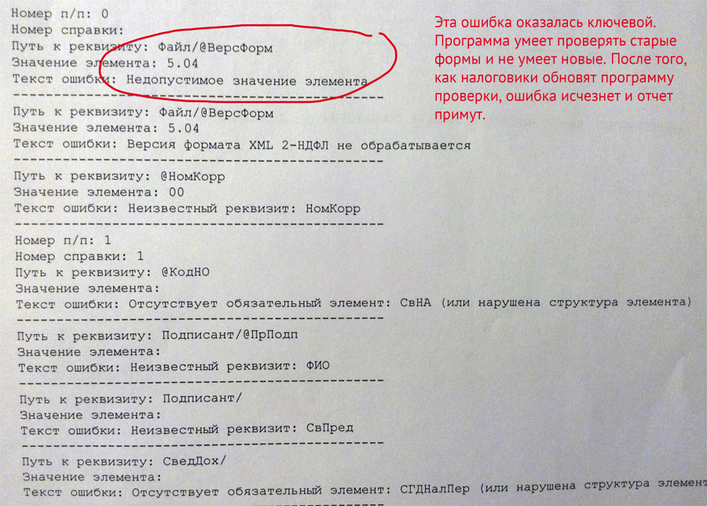
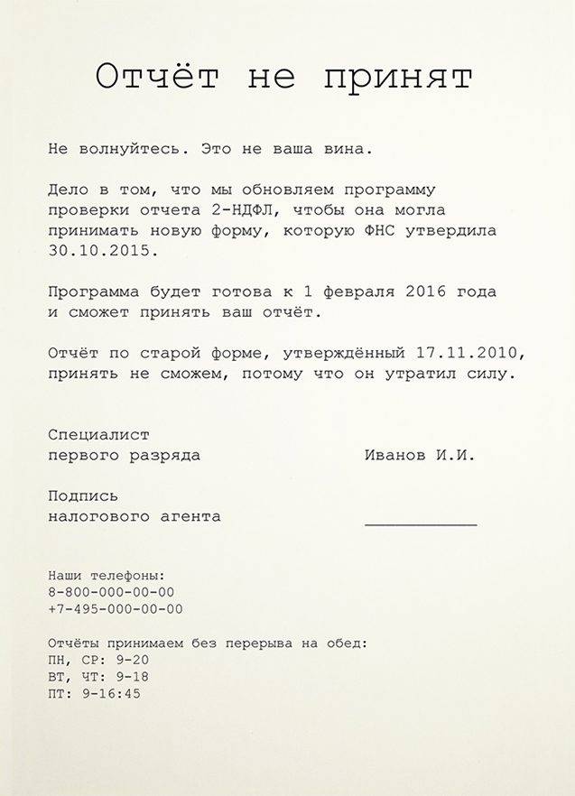

Сообщение из налоговой в инфостиле
Я веду бухгалтерию ООО и стараюсь вовремя сдавать отчеты в налоговую и фонды. На этой неделе сдавала 2-НДФЛ, в котором отчиталась перед государством, сколько за год заработали наши сотрудники и сколько налогов с их зарплат мы заплатили.
Государство любит менять внешность отчетов — за год форма отчета может поменяться несколько раз. Бухгалтеры к этому привыкли и время от времени скачивают из интернета новые формы. Либо обновляют программы, если сдают отчеты электронно.
К сожалению, налоговики не так расторопны. Новая форма 2-НДФЛ вышла в конце прошлого года, но в первый рабочий день января налоговая не могла принять отчет в новом виде — она не обновила программу приема, а принять в старом виде не позволял закон.
Налоговики прогнали мой файл через программу проверки, сказали, что в моем отчете какие-то ошибки и всучили вот такой протокол 
Отчет не приняли, но причину я поняла только после того как забила часть непонятных фраз в яндексе и поискала ответы на бухгалтерских форумах.
Виноваты оказались сами налоговики — необновленная программа думала, что проверяет отчет по старой форме. Программу клинило, она извергала из себя страшные ругательства вроде «недопустимого значения элемента». Неинформативное сообщение запутало и меня, и самих налоговиков — мальчики-инспекторы пожимали плечами и советовали исправить все указанные в протоколе ошибки.
Как исправить ситуацию? Не буду говорить о том, что кое-кому надо вовремя обновлять программы приема отчетности — мир не идеален. Но два полезных и недорогих шага сэкономят время налоговиков и бухгалтеров:
1. На сайте ИФНС на видное место повесить сообщение:
«Если вы в ближайшее время планируете сдать 2-НДФЛ, не торопитесь. Еще не все налоговые обновили программы приема отчетов, поэтому не смогут проверить и принять ваш отчет. В этих налоговых программа уже обновилась и готова принять 2-НДФЛ, в остальных — после такого-то числа».
2. Протокол проверки отчета должен успокоить бухгалтера и все объяснить, а не пугать и не плеваться непонятными словами.
Но это сообщение — тоже костыль. На деле отчет должны принять и поставить в очередь на загрузку, а не заставлять бухгалтеров приезжать снова.
12 января 2016